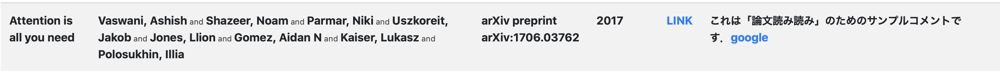

「論文読み読み」は何ができるか
Bib形式で記述されている文献情報を良い感じのフォーマットで表示することができます．文献のタイトルや著者などを検索することもできます．また，Bibの属性としてcomment=を独自に導入し，個人的な論文の要約や著者実装などへのリンクをHTMLライクに記述できます．
例えば，文献情報が以下のように用意されていたとします．
@article{vaswani2017attention,
title={Attention is all you need},
author={Vaswani, Ashish and Shazeer, Noam and Parmar, Niki and Uszkoreit, Jakob and Jones, Llion and Gomez, Aidan N and Kaiser, Lukasz and Polosukhin, Illia},
journal={arXiv preprint arXiv:1706.03762},
year={2017},
url={https://arxiv.org/abs/1706.03762},
comment = "これは「論文読み読み」のためのサンプルコメントです．<a href = 'google.com'>google</a>",
}comment=属性は本来Bibにはありませんが，本ツールのために独自に付け加えています．前述した通り，ここには個人的に作成した論文の要約や，関連するリンクをHTMLライクで記述できます．これを本ツールに入力すると，以下のようになります．

今のところ，タイトル，著者，会議名（雑誌名なども含む），年代，リンク，コメントが表示されるようになっています．リンクにはurl=属性に記述されたリンクに飛ぶようになっています．
「論文読み読み」の利点
本ツールを利用することの利点は，以下の4点でしょう．-
Bibを可視化できる
Bibには文献情報を集約できますが，人にとっての視認性は低いです．本ツールを使用することで，情報をより見やすいフォーマットで可視化できます． -
文献にすぐアクセスできる
タイトルを完璧に記憶している文献であっても，そのPDFにアクセスするのはある程度の数のステップを踏むため面倒です．あらかじめPDFをダウンロードしていても，数が増えると管理が困難です．Bibのurl=属性にリンクを記載していれば，本ツールにより論文のPDFにすぐにアクセスできます． -
文献にコメントを付与できる
文献を読んだのであれば，少しでも自分の言葉でコメントを残しておくと後の自分にとって役に立つことが予想されます．Bibにcomment=属性として記述しておけば，本ツールで可視化した際に文献のアウトラインがすぐに分かります．コメントの内容で検索もできるので，曖昧な記憶からの文献検索も可能になることが期待されます． -
文献管理がBibファイルだけで済む
執筆の際に文献情報に関する特別な準備を必要としません．文献管理ツールは様々にあると思いますが，結局，論文を執筆する際にはBib形式にする必要があります．本ツールを用いて文献管理を行えば，文献情報は常にBibに蓄積されるため，論文執筆の際にもそのまま利用できます．
要望・バグ報告など
GitHubにてIssueとしてお願いいたします（必ず反映されるとは限りません）．
免責事項
本ツールの使用により発生したいかなる損害も，ツールの作成者は一切責任を負いません．